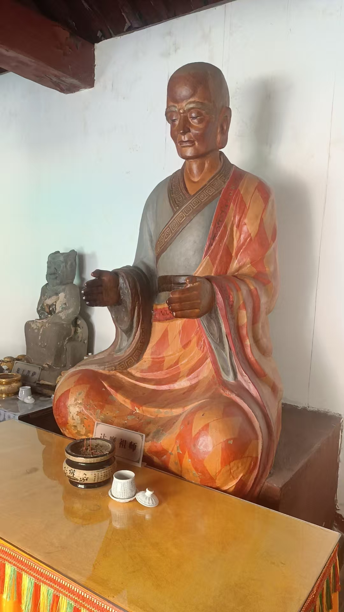
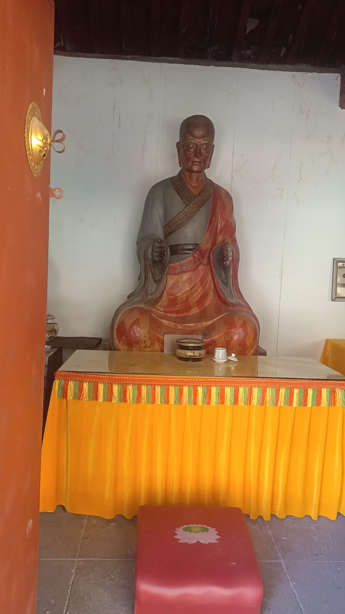

20260111拉手一段时间后，推纸片
原始对话记录

拉手一段时间后，推纸片
就是把一张A4纸，稍微弯一弯，能立在桌子上
两只手，一边一只，去推
不一定推动，但时间长了，手上力度，就会感觉越来越硬
再去练推风车，把纸片放在针尖上，牙签上，
去推纸片
其中微妙感觉，
练了才知道
很有意思
主要有个好处，练的力度大了，自己或者家人，有个头疼脑热的，手一扫就好了
人的疾病，都是正能量缺失，负能量入侵
咱们也看到了，手上能量，放着光，一扫，光就修复
以下为编者整理的主题文章
编者整理 · 主题文章
拿一张纸，试着推一推
导读：拉了一阵手，手上有感觉了，怎么知道那感觉靠得住？记录里给了一个很笨的办法：把 A4 纸立起来，用手去推。不一定推得动，但手上的力度会一天天变硬。
这一页开头配了两张图，下面才是一小段话。
拉手一段时间后，推纸片。
做法是这样的：拿一张 A4 纸，稍微弯一弯，让它能立在桌子上。两只手，一边一只，去推。
不一定推动。但时间长了，手上的力度，就会感觉越来越硬。
再往下，是把纸片放在针尖上、牙签上，去推。他管这个叫推风车。
"其中微妙感觉，练了才知道。很有意思。"
我喜欢这个练法，就因为它的笨。纸立着，一碰就倒，骗不了人。手上到底有没有那点力气，手一伸就知道。比闭着眼睛自己说"我感觉到了"，老实得多。
记录里说，练这个主要有个好处：力度大了，自己或者家人，有个头疼脑热的，手一扫就好了。
理由他也写了。"人的疾病，都是正能量缺失，负能量入侵。""咱们也看到了，手上能量，放着光，一扫，光就修复。"
这话对不对，我没法替谁打包票。我能说的是，这一页的语气跟它的练法一样朴素——不玄，不绕，就一张纸立在桌上。
前一篇里，师父说过动作"绝不出偏"，说练这个就是修复身体。到了推纸片这儿，他甚至没多写一句原理，只留了"练了才知道"。
大约有些东西就是这样。写在纸上的，都不如自己伸手推一次。
说明与免责：本站为民间修炼、民俗文化与传统文化资料的整理与记录，内容源自传承者口传与个人修习体会，仅供文化交流与研究参考，不构成医疗、健康、投资或任何功效承诺。所述内容属传统术数范畴，请理性看待；如身体不适，请及时就医。请遵守法律法规与公序良俗。